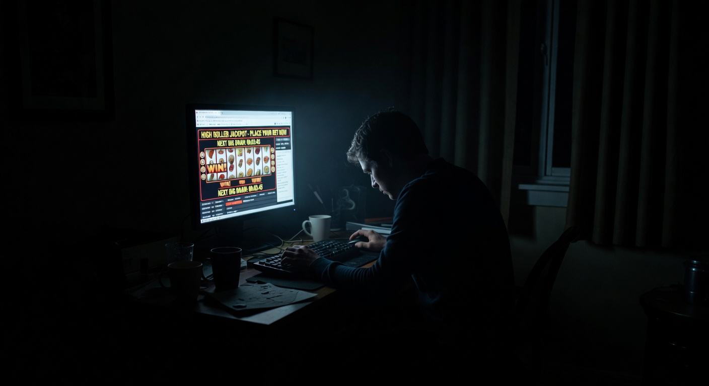
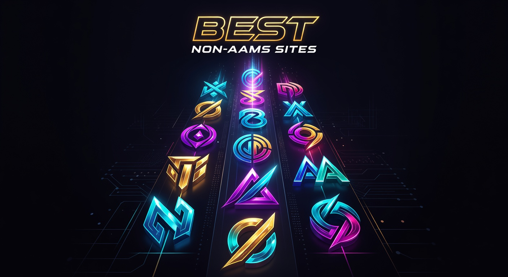
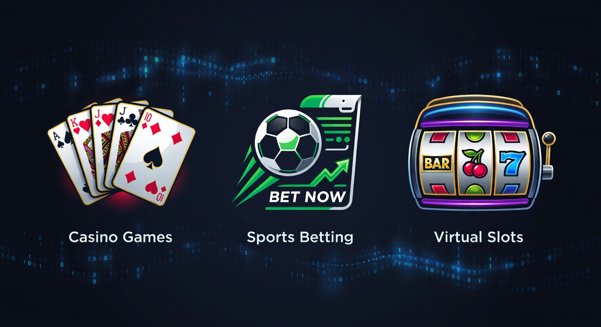
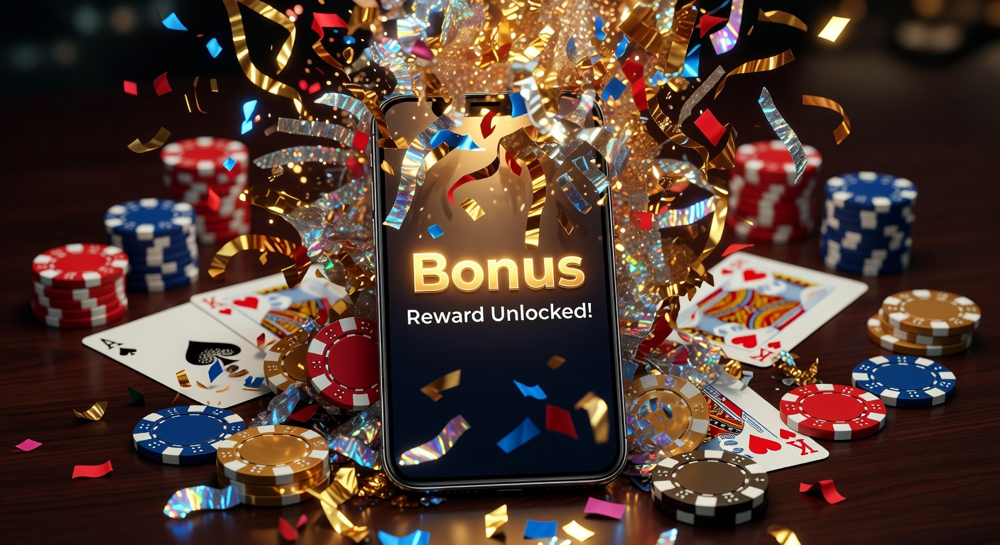

Siti non AAMS senza documento: Guida ai migliori casinò e bookmaker senza verifica
Nel panorama del gioco d'azzardo digitale del 2026, l'esigenza di privacy e rapidità d'esecuzione ha spinto una fetta sempre più ampia di utenti verso i siti non aams senza documento. Questa evoluzione non è casuale, ma riflette un cambiamento strutturale nell'interazione tra utente e piattaforma, dove la burocrazia viene sostituita da protocolli tecnologici avanzati. In questa guida esploreremo il funzionamento di questi operatori, analizzando la sicurezza, le licenze internazionali e le opportunità che offrono ai giocatori esperti del settore IT.
I progressi nelle tecnologie di crittografia e l'adozione massiccia delle blockchain hanno permesso ai casinò internazionali di snellire i processi di onboarding. Oggi, cercare un casino senza documenti significa puntare su piattaforme che valorizzano il tempo del cliente, eliminando le attese estenuanti legate alla verifica manuale dei documenti d'identità. In questo contesto, i siti non aams senza documento rappresentano la frontiera del gioco istantaneo.
Cosa sono e come funzionano i siti di gioco senza invio documenti
I siti non aams senza documento sono portali di iGaming che operano sotto licenze estere, come quelle di Curaçao o di Malta, e che non impongono il processo di KYC (Know Your Customer) tradizionale al momento della registrazione o del primo prelievo. A differenza degli operatori ADM (ex AAMS), che richiedono obbligatoriamente il caricamento di una carta d'identità entro 30 giorni, queste piattaforme utilizzano sistemi alternativi per garantire la legittimità delle transazioni.
Tecnicamente, questi siti sfruttano la verifica tramite provider di pagamento o l'anonimato intrinseco delle criptovalute. Quando un utente deposita tramite un wallet Bitcoin o Ethereum, la transazione stessa funge da prova di possesso del fondo, rendendo superflua la condivisione di dati sensibili. Questo approccio riduce drasticamente i rischi di data breach, un tema caldissimo nel 2026 per chiunque lavori nell'IT o si occupi di sicurezza informatica.
Perché molti utenti cercano siti non AAMS senza documento

La spinta verso i siti non aams senza documento è alimentata da una crescente diffidenza verso la centralizzazione dei dati. Molti giocatori italiani preferiscono mantenere separate le proprie attività di svago dal monitoraggio istituzionale, specialmente in un'epoca in cui lo SPID e altri sistemi di identità digitale collegano ogni aspetto della vita privata. Il desiderio di anonimato non è necessariamente legato ad attività illecite, ma alla volontà di proteggere la propria "impronta digitale".
Privacy e protezione dei dati personali
La protezione dei dati è la priorità numero uno per l'utente IT moderno. Utilizzando i siti non aams senza documento, si evita che scansioni di passaporti o patenti vengano archiviate in server di terze parti che potrebbero non avere standard di sicurezza adeguati. Molte delle piattaforme che analizzeremo, come Wildtokyo Casinò e Astromania Casinò, implementano protocolli di crittografia end-to-end per proteggere anche le minime informazioni scambiate.
Velocità di registrazione e accesso immediato
In un mondo che viaggia a velocità gigabit, attendere 48 ore per la verifica di un account è anacronistico. I siti non aams senza documento permettono di passare dalla landing page al primo spin in meno di 60 secondi. Questo è possibile grazie a moduli di registrazione semplificati che richiedono solo un'email e una password, o addirittura tramite il collegamento diretto di un crypto-wallet.
Assenza delle restrizioni dell'autoesclusione AAMS
Un altro motivo rilevante riguarda il registro unico delle autoesclusioni. Molti utenti, pur avendo superato un periodo di pausa consapevole, si trovano impossibilitati a rientrare nei circuiti ADM a causa di intoppi burocratici. I siti non aams senza documento offrono una via d'uscita, permettendo di giocare responsabilmente su piattaforme internazionali che non consultano il database centralizzato italiano, pur offrendo strumenti di autolimitazione indipendenti.
Classifica dei migliori siti non AAMS senza documento nel 2026

Il mercato del 2026 è estremamente competitivo. Abbiamo selezionato i portali che offrono il miglior equilibrio tra sicurezza, ampiezza del catalogo e velocità dei pagamenti. Ognuno di questi operatori si distingue per caratteristiche tecniche peculiari, ideali per chi cerca siti non aams senza documento affidabili.
| Piattaforma | Licenza | Punto di Forza | Bonus Principale |
|---|---|---|---|
| Millioner | Curaçao | Interfaccia High-Tech | Bonus Benvenuto 100% fino a 1000€ |
| Roulettino | Kahnawake | Ottimizzazione Mobile | 50 Free Spin Senza Documenti |
| Dragonia | MGA Alternative | Gamification Avanzata | Cashback 20% |
LamaBet - Esperienza di scommesse fluida senza KYC
LamaBet si è imposto nel 2026 come il punto di riferimento per le scommesse sportive. La sua architettura software permette di piazzare scommesse senza dover passare per lunghe trafile di identificazione. La piattaforma integra flussi di dati in tempo reale per le quote, garantendo un'esperienza utente priva di lag, fondamentale per il betting live.
Spinanga - Il casinò ideale per chi cerca l'anonimato
Spinanga sfrutta appieno le potenzialità delle blockchain di terza generazione. È uno dei siti non aams senza documento più apprezzati per la sua sezione di slot machine, che include titoli dei principali provider mondiali. Qui, l'anonimato è garantito dall'uso di smart contracts per la gestione delle vincite, eliminando la necessità di un'interferenza umana nei prelievi.
Mr. Pacho - Bonus elevati e prelievi semplificati
Mr. Pacho si distingue per un approccio visivo unico e una politica di bonus molto aggressiva. Offre pacchetti di benvenuto che non richiedono la convalida del conto per essere attivati. La sua infrastruttura di rete è ottimizzata per gestire migliaia di connessioni simultanee, rendendolo uno dei siti non aams senza documento tecnicamente più solidi sul mercato.
Sportuna - Ampio palinsesto sportivo senza verifica
Sportuna è la scelta prediletta per chi non vuole rinunciare a nessun mercato sportivo, dalle leghe minori di calcio agli eSports più di nicchia. La sua capacità di offrire siti scommesse senza verifiche invasive lo rende estremamente popolare tra i trader sportivi che operano in mobilità e necessitano di rapidità d'esecuzione.
Le diverse tipologie di piattaforme senza verifica

Non tutti i siti non aams senza documento sono uguali. Esistono sottocategorie basate sulla tecnologia di backend e sui metodi di pagamento accettati, che influenzano direttamente il livello di privacy garantito all'utente.
Crypto Casinò e anonimato totale
Queste piattaforme rappresentano l'apice della privacy. Utilizzando esclusivamente criptovalute come Bitcoin, Ethereum o Tether, questi siti non richiedono alcun dato personale. La transazione avviene on-chain, e l'identità dell'utente è legata esclusivamente alla sua chiave pubblica. Nel 2026, l'integrazione con wallet come MetaMask o Phantom è diventata lo standard per questi siti non aams senza documento.
Siti Pay N Play con sistemi di pagamento intelligenti
La tecnologia Pay N Play, inizialmente lanciata da Trustly, si è evoluta. Oggi molti siti non aams senza documento permettono di depositare e giocare istantaneamente perché la verifica dell'identità avviene "dietro le quinte" tramite l'istituto bancario. In questo modo, l'utente non deve caricare file, ma è la banca a confermare la maggiore età e la titolarità del conto in modo crittografato e sicuro.
Un esempio eccellente di integrazione fluida è visibile su astromania casino, dove il processo di login si fonde con quello di deposito, riducendo i punti di frizione nell'interfaccia utente. Anche Astromania Casinò ha adottato questo modello per attrarre il pubblico europeo più esigente.
Bonus e promozioni disponibili senza inviare documenti

Una delle leggende urbane da sfatare è che i siti non aams senza documento offrano meno bonus. Al contrario, il risparmio sui costi di gestione della conformità KYC permette a questi operatori di investire maggiormente in incentivi per i giocatori. Nel 2026, abbiamo assistito a una proliferazione di offerte sempre più generose.
Per chi cerca vantaggi immediati, è possibile trovare opzioni di casino con deposito minimo 5 euro senza documento, ideali per testare la piattaforma con un rischio minimo. Questo tipo di approccio è molto apprezzato da chi vuole valutare la qualità del software prima di impegnare capitali maggiori.
Bonus di benvenuto e giri gratis
Il classico bonus di benvenuto rimane la calamita principale. Spesso si tratta di un raddoppio del primo deposito, come il pacchetto 100 fino a 500€, accompagnato da una serie di giri gratis sulle slot più popolari. La particolarità dei siti non aams senza documento è che questi bonus sono accreditati istantaneamente, senza dover attendere l'approvazione del documento.
Offerte di cashback settimanale
Il cashback è diventato essenziale per i giocatori high-roller. Molti siti non aams senza documento offrono rimborsi che vanno dal 10% al 25% sulle perdite nette della settimana. Questa meccanica, spesso legata a programmi fedeltà automatizzati, non richiede alcuna interazione con il supporto clienti, rendendo il processo trasparente e immediato.
Tra le piattaforme che eccellono in questo, Diva Spin Casinò offre un sistema di cashback basato su livelli che premia la costanza senza mai richiedere verifiche invasive. Allo stesso modo, Lunubet Casinò ha implementato un algoritmo di calcolo in tempo reale del rimborso spettante.
Metodi di pagamento consigliati per prelievi immediati
La scelta del metodi di pagamento è cruciale quando si opera su siti non aams senza documento. Se l'obiettivo è mantenere l'anonimato e ricevere le vincite in pochi minuti, alcune opzioni sono nettamente superiori alle carte di credito tradizionali.
- Criptovalute: Bitcoin, Litecoin ed Ethereum offrono tempi di transazione che dipendono solo dalla congestione della rete (solitamente sotto i 10 minuti).
- E-wallets: Soluzioni come MiFinity, Jeton o Revolut permettono di gestire i fondi senza collegare direttamente il conto bancario principale al sito di gioco.
- Carte Prepagate: Voucher come Neosurf o Cashlib consentono di depositare sui siti non aams senza documento acquistando un codice in contanti, garantendo il massimo livello di privacy finanziaria.
L'utilizzo di un moderno metodi di transazione digitale assicura che il flusso di denaro non venga bloccato dai filtri preventivi delle banche tradizionali, che spesso vedono con sospetto i trasferimenti verso operatori di gioco esteri.
La questione della legalità e delle licenze estere
Operare su siti non aams senza documento non significa giocare nell'illegalità. La normativa europea e internazionale permette a società regolarmente registrate di offrire servizi di intrattenimento globale. Il punto cardine è la presenza di una licenza riconosciuta, che garantisce l'equità dei giochi (RNG certificato) e la solidità finanziaria dell'operatore.
Licenza eGaming di Curaçao
È la licenza più comune tra i siti non aams senza documento. Il governo di Curaçao è stato uno dei primi a regolamentare il gioco online, offrendo un framework legislativo che favorisce l'innovazione tecnologica, inclusi i pagamenti in criptovalute. Piattaforme come Spinempire Casinò e Boomerangbet Casino operano con successo sotto questa giurisdizione, garantendo standard di protezione elevati.
Licenza Malta Gaming Authority (MGA)
La Malta Gaming Authority è considerata il gold standard in Europa. Sebbene sia più rigorosa rispetto a Curaçao, alcune piattaforme MGA nel 2026 hanno implementato sistemi di verifica basati su Open Banking che permettono di giocare senza caricare manualmente documenti, rientrando tecnicamente nella categoria dei siti non aams senza documento per quanto riguarda l'esperienza utente.
Altre autorità di rilievo includono la UK Gambling Commission, sebbene sia molto focalizzata sul mercato britannico, e la licenza di Kahnawake, utilizzata da operatori storici come 888Casino in alcune delle loro declinazioni internazionali per mercati specifici.
Vantaggi e svantaggi del gioco senza documenti
Come ogni scelta tecnologica, anche l'utilizzo di siti non aams senza documento comporta dei compromessi che l'utente esperto deve valutare con attenzione. Di seguito un'analisi comparativa dei pro e dei contro.
Vantaggi:
- Privacy assoluta e protezione dell'identità digitale contro furti di dati.
- Registrazione istantanea e prelievi che spesso vengono elaborati in meno di un'ora.
- Accesso a una varietà di giochi e mercati di scommesse più ampia rispetto al circuito ADM.
- Nessun limite restrittivo imposto dal governo centrale sui depositi mensili.
Svantaggi:
- Assenza della tutela diretta dell'ADM in caso di dispute legali complesse.
- Necessità di una maggiore responsabilità individuale nella gestione del bankroll.
- Alcuni metodi di pagamento tradizionali (come le carte bancarie italiane) potrebbero non funzionare.
Per mitigare questi svantaggi, è fondamentale affidarsi a portali che hanno una solida reputazione nella community, come VegasHero Casinò o il più recente Wonderluck Casinò, noti per la loro serietà nel risolvere eventuali controversie tramite il supporto live chat 24/7.
Consigli per i giocatori: Millioner, Roulettino e altre piattaforme
Se state cercando un'esperienza di gioco di alto livello nel 2026, vi consigliamo di dare un'occhiata ad alcuni brand emergenti che stanno ridefinendo gli standard dei siti non aams senza documento.
Millioner è senza dubbio la sorpresa dell'anno. La sua interfaccia utente è pensata per i "power user" che amano avere statistiche dettagliate e una velocità di caricamento delle slot quasi istantanea. È il prototipo del moderno siti scommesse che non fa perdere tempo in scartoffie.
Per chi invece preferisce il brivido dei tavoli verdi, Roulettino offre una sezione live casino con croupier dal vivo che parlano diverse lingue, garantendo un'immersione totale senza la necessità di inviare documenti per iniziare a puntare.
Altre opzioni valide includono Wyns, celebre per i suoi tornei settimanali, e Kinbet, che integra un'ottima sezione di siti di scommesse con quote sopra la media di mercato. Infine, Dragonia si distingue per un sistema di ricompense basato su missioni quotidiane, perfetto per chi cerca un'esperienza gamificata nei siti non aams senza documento.
Come scegliere una piattaforma sicura ed affidabile
Non tutti i siti non aams senza documento meritano la vostra fiducia. Per identificare quelli sicuri, noi di esperti IT seguiamo una checklist rigorosa. In primo luogo, verifichiamo la presenza del protocollo HTTPS e di certificati SSL validi emessi da autorità riconosciute. Questo garantisce che la comunicazione tra il vostro browser e i server del casinò sia criptata.
In secondo luogo, analizziamo i fornitori di software. La presenza di giganti come NetEnt, Evolution Gaming o Pragmatic Play è un forte indicatore di affidabilità, poiché questi provider non concedono i propri giochi a operatori sospetti. Molti siti non aams senza documento di qualità offrono anche la funzione Bonus Crab, un elemento di gamification molto popolare nel 2026 che permette di ottenere premi extra tramite un minigioco interattivo.
Un altro fattore cruciale è la trasparenza dei termini e delle condizioni. Un buon casino senza documenti deve indicare chiaramente i requisiti di scommessa (wagering) e i limiti di prelievo giornalieri o settimanali. Diffidate dai siti che nascondono queste informazioni o che hanno clausole eccessivamente punitive.
Sicurezza informatica nei casinò No-KYC
Nel 2026, la sicurezza nei siti non aams senza documento ha raggiunto livelli paragonabili alle piattaforme di banking online. L'adozione della crittografia quantistica-resistente protegge i dati degli utenti anche contro le minacce più avanzate. Dal punto di vista tecnico, l'assenza di un database centrale contenente scansioni di documenti riduce il rischio di "identity theft" (furto d'identità), poiché non c'è nulla di sensibile da rubare.
I migliori siti di iGaming implementano inoltre l'autenticazione a due fattori (2FA) tramite app come Google Authenticator o chiavi fisiche (YubiKey). Questo aggiunge uno strato di sicurezza fondamentale: anche se qualcuno dovesse scoprire la vostra password, non potrebbe accedere al conto senza il secondo codice temporaneo.
Il ruolo delle criptovalute nel gioco senza documenti
Le criptovalute sono il vero motore dei siti non aams senza documento. Nel 2026, l'uso di stablecoin come USDC o USDT ha eliminato il problema della volatilità, permettendo ai giocatori di mantenere il valore delle proprie vincite costante. La tecnologia delle "Layer 2" (come Polygon o Arbitrum) ha inoltre ridotto le commissioni di transazione a pochi centesimi, rendendo conveniente anche il deposito di piccole somme.
L'integrazione di Bitcoin nei siti scommesse senza verifica ha creato un ecosistema finanziario parallelo e resiliente. Molti operatori offrono ora anche "Crypto-only bonuses", incentivi speciali per chi sceglie di operare esclusivamente sulla blockchain, confermando la tendenza verso una decentralizzazione sempre più spinta del settore iGaming.
Giri Gratis senza documenti: Le migliori offerte del 2026
Chi non ama i giri gratis? I siti non aams senza documento utilizzano le free spin senza deposito immediato senza documenti come uno strumento di marketing estremamente efficace. Queste offerte permettono di vincere denaro reale senza rischiare un solo centesimo dei propri fondi. Tuttavia, è importante leggere attentamente le regole: spesso le vincite da free spin sono soggette a un tetto massimo di prelievo (cap).
Nel 2026, abbiamo visto emergere promozioni di free spin senza deposito immediato senza documenti non aams che vengono erogate tramite codici promozionali distribuiti su canali Telegram o server Discord dedicati. Questo approccio moderno permette ai casinò di costruire una community fedele, offrendo valore immediato senza richiedere in cambio la privacy dell'utente.
Scommesse sportive senza verifica: Il nuovo trend
Il settore delle scommesse senza documenti è esploso negli ultimi due anni. Gli utenti IT apprezzano particolarmente la possibilità di utilizzare bot di scommesse legali o software di analisi statistica che si collegano tramite API ai siti scommesse internazionali. La rapidità con cui un account può essere creato e ricaricato è vitale per chi pratica l'arbitraggio o il trading sportivo.
Inoltre, i siti di scommesse non AAMS offrono spesso quote più competitive, dato che non devono sostenere il pesante carico fiscale italiano, ribaltando questo vantaggio sull'utente finale sotto forma di payout più alti (spesso superiori al 97% sui grandi eventi calcistici).
Slot senza documenti: Giocabilità e RNG
Le slot senza documenti sono il cuore pulsante di ogni casinò online che si rispetti. Nel 2026, i giochi sono sviluppati con tecnologia HTML5 di ultima generazione, garantendo una fluidità perfetta su qualsiasi dispositivo, dai PC desktop agli smartphone pieghevoli. La certificazione del Random Number Generator (RNG) da parte di laboratori indipendenti come eCOGRA o iTech Labs assicura che ogni spin sia assolutamente casuale e non manipolabile.
Molti siti non aams senza documento permettono di provare le slot in modalità "demo" senza nemmeno creare un account. Questo è il massimo livello di trasparenza: l'utente può testare la volatilità e le funzioni speciali di un gioco prima ancora di pensare a un deposito.
Bonus casino senza deposito e senza invio documenti
Il bonus casino senza deposito e senza invio documenti è il "Sacro Graal" per molti giocatori. Si tratta di una piccola somma (solitamente tra i 5€ e i 20€) che viene accreditata all'apertura del conto. Sebbene i requisiti di riscatto possano essere impegnativi, rappresenta un'opportunità reale per costruire un bankroll dal nulla in uno dei tanti siti non aams senza documento disponibili oggi.
Questi bonus sono particolarmente utili per esplorare la sezione "Live Dealer" o per provare nuove varianti di blackjack e roulette che potrebbero non essere disponibili sui siti tradizionali. La velocità con cui questi bonus vengono erogati conferma la superiorità tecnica delle piattaforme internazionali rispetto alla burocrazia dei siti locali.
Esperienza utente e interfacce mobile-first
Nel 2026, il traffico mobile rappresenta oltre l'85% delle sessioni di gioco. I siti non aams senza documento hanno risposto a questa tendenza sviluppando interfacce "mobile-first" estremamente reattive. Non è più necessario scaricare app ingombranti che occupano memoria sul telefono; tutto avviene tramite browser grazie alle Progressive Web Apps (PWA).
Questa scelta tecnica non solo migliora l'esperienza utente, ma aumenta anche la sicurezza, poiché le PWA girano in un ambiente sandbox isolato dal resto del sistema operativo. Navigare tra i vari siti di scommesse diventa così un'operazione fluida, sicura e immediata, perfetta per chi vive una vita dinamica e connessa.
Strategie per gestire il gioco responsabile senza AAMS
Senza il controllo centralizzato dell'ADM, la responsabilità del gioco ricade maggiormente sull'individuo. I migliori siti non aams senza documento offrono comunque strumenti avanzati di auto-tutela. È possibile impostare limiti di deposito giornalieri, timer di sessione e periodi di "cool-off" direttamente dal pannello di controllo dell'utente.
Invitiamo sempre a consultare fonti autorevoli per mantenere un approccio sano al gioco. Potete trovare risorse utili su come riconoscere i segnali di dipendenza su siti come Wikipedia o portali governativi internazionali dedicati alla salute mentale. Giocare su siti non aams senza documento deve rimanere un piacere e una forma di intrattenimento tech, mai una necessità finanziaria.
Comparazione tra siti ADM e siti non AAMS
La differenza principale non risiede solo nei documenti, ma nella filosofia di fondo. Mentre i siti ADM sono focalizzati sulla conformità normativa e sulla tassazione nazionale, i siti non aams senza documento puntano sull'innovazione globale e sull'efficienza. Un sito ADM richiederà sempre lo SPID o la carta d'identità, limitando la libertà di scelta di chi desidera un approccio più snello.
D'altra parte, gli operatori internazionali offrono programmi VIP molto più ricchi, con account manager dedicati e regali fisici, vantaggi che spesso i siti con licenza italiana non possono permettersi a causa delle restrizioni pubblicitarie e fiscali. La scelta tra le due tipologie dipende quindi dalle priorità del singolo giocatore: massima protezione istituzionale o massima libertà operativa.
Il futuro del gioco d'azzardo online nel 2026 e oltre
Guardando al futuro, è chiaro che i siti non aams senza documento continueranno a dominare la scena tecnologica. L'integrazione con l'intelligenza artificiale per il supporto clienti istantaneo e la personalizzazione dei palinsesti renderà l'esperienza ancora più sartoriale. Vedremo probabilmente l'ascesa dei casinò nel Metaverso, dove l'identità sarà gestita tramite avatar e NFT, eliminando definitivamente il concetto di "documento cartaceo".
La sfida per i legislatori sarà quella di adattarsi a questa realtà fluida, dove i confini geografici perdono significato di fronte alla potenza della rete. I siti scommesse senza barriere d'ingresso rappresentano un'evoluzione naturale dell'internet delle persone, dove la fiducia è costruita sul codice e non solo sulle autorizzazioni governative.
Domande Frequenti (FAQ)
È legale giocare sui siti non AAMS senza documento dall'Italia?
Sì, non esiste alcuna legge che proibisca ai cittadini italiani di accedere a siti internazionali. L'importante è scegliere piattaforme con licenze valide come quelle di Curaçao o MGA per assicurarsi che i giochi siano equi.
I prelievi sono davvero immediati?
Sui siti non aams senza documento che utilizzano criptovalute o e-wallets, i prelievi vengono spesso elaborati in pochi minuti. Se si utilizzano bonifici tradizionali, potrebbero essere necessari 1-3 giorni lavorativi.
Cosa succede se il sito mi chiede i documenti in un secondo momento?
Alcuni siti possono richiedere una verifica (KYC) solo in caso di prelievi eccezionalmente elevati o attività sospette. Tuttavia, per la maggior parte delle operazioni quotidiane, i siti non aams senza documento mantengono la promessa di anonimato.
Posso ottenere un bonus benvenuto senza documenti?
Assolutamente sì. La maggior parte dei bonus di benvenuto su queste piattaforme viene attivata semplicemente effettuando il primo deposito, senza alcuna necessità di caricare file d'identità.
I siti senza licenza AAMS sono sicuri?
Molti sono estremamente sicuri, spesso più dei siti locali grazie all'uso di tecnologie blockchain. È fondamentale però leggere recensioni indipendenti e verificare che abbiano almeno una licenza internazionale valida.
Conclusioni sul futuro del gioco d'azzardo online
In conclusione, i siti non aams senza documento rappresentano la risposta tecnologica a un'esigenza di libertà e privacy che caratterizza il 2026. Grazie a pagamenti rapidi, bonus generosi e una sicurezza informatica all'avanguardia, queste piattaforme offrono un'alternativa solida e professionale ai circuiti tradizionali. Per l'utente consapevole, specialmente se proveniente dal mondo IT, si tratta di strumenti potenti che, se usati con giudizio, elevano l'esperienza del gioco online a un nuovo livello di efficienza.
Per approfondire le tematiche legate alla sicurezza dei pagamenti digitali e alle nuove frontiere del fintech, vi consigliamo di leggere gli approfondimenti su Forbes o di consultare le ultime news tecnologiche su BBC Technology. Restate sempre aggiornati, giocate con la testa e godetevi l'innovazione che i siti non aams senza documento sanno offrire.

Esperta di contenuti digitali e strategie SEO con oltre 6 anni di esperienza nel settore.